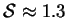
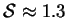

Vapour transport across a vertical cavity or duct of bounded horizontal section was considered in the limit as the vertical length scale tends to infinity. Exact solutions were presented for rectangular and elliptic sections at low mass transfer rates.
The mass fraction and
temperature in all cases vary linearly with the transverse
coordinate. The unique exact solutions for the purely vertical
velocity for rectangular and elliptic sections are
infinite hyperbolic-trigonometric series and bivariate polynomials of
degree 3, respectively.
These match all the conditions of the full problem for
vertical cavities or ducts of finite height
except the boundary conditions at the top and bottom and
are valid for all values of Gr,  , Pr, Sc and
, Pr, Sc and  , though
naturally their stability cannot be guaranteed for large Grashof
numbers.
, though
naturally their stability cannot be guaranteed for large Grashof
numbers.
For large sectional spans, the flows approach the familiar odd cubic
profile, which also exists in the plane of spanwise symmetry of an
elliptic section of arbitrary  . In the rectangular section, the
velocity profile for
. In the rectangular section, the
velocity profile for  is distorted as
is distorted as  decreases, with the
location of the extrema moving outward from
decreases, with the
location of the extrema moving outward from
 toward the
hot and cold walls; for
toward the
hot and cold walls; for
 , however, the profile and magnitude
are practically independent of
, however, the profile and magnitude
are practically independent of  .
.
The cavities found in the walls built from hollow concrete masonry blocks
common in North Queensland are often characterized by a large vertical aspect
ratio,  , and a roughly rectangular section of spanwise aspect ratio
. Although the Grashof number in these cavities will
often be too high for the unicellular flow described here to be stable, it is
clear that a two-dimensional analysis would be inadequate. In particular,
it would be necessary to consider the influence of the end-walls in
predicting the critical Grashof number for the onset of multicellular
convection.
, and a roughly rectangular section of spanwise aspect ratio
. Although the Grashof number in these cavities will
often be too high for the unicellular flow described here to be stable, it is
clear that a two-dimensional analysis would be inadequate. In particular,
it would be necessary to consider the influence of the end-walls in
predicting the critical Grashof number for the onset of multicellular
convection.
Although this work deals with simultaneous heat and mass transfer,
it may be pointed out that the corresponding results for the
conduction regime in a cavity of bounded section in the
analogous single fluid heat transfer problem (trivially obtained by setting
the buoyancy ratio,  , to zero) are also new.
, to zero) are also new.